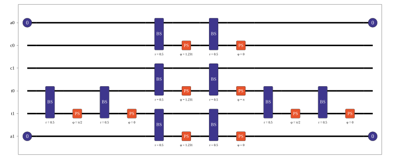
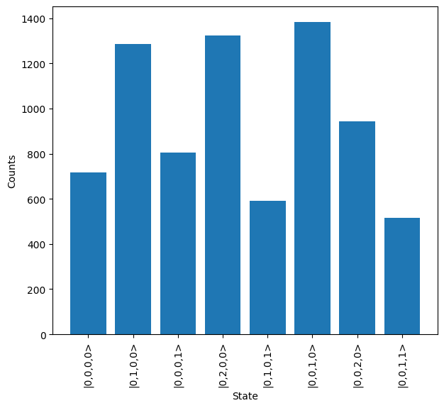
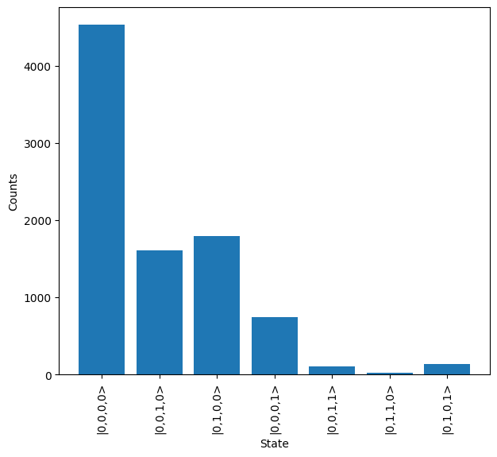
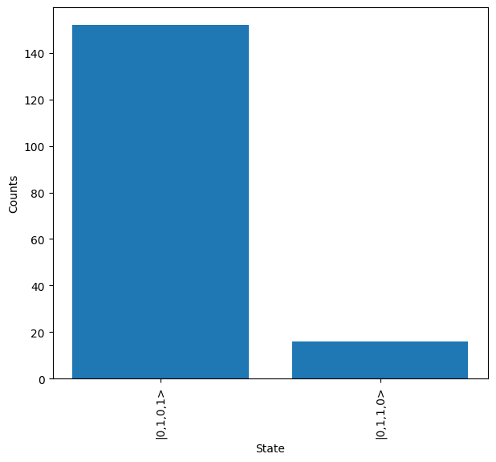
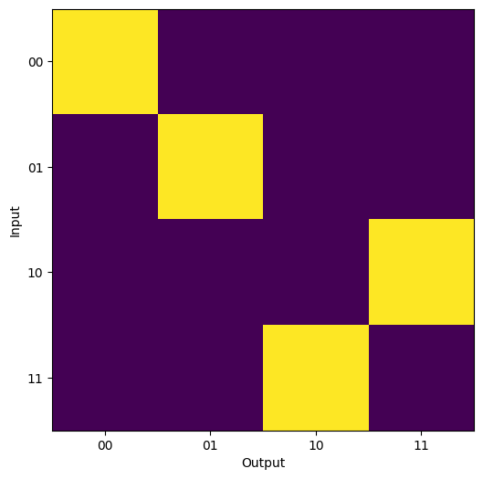

Ralph CNOT - All Simulators¶
This notebook contains a recreation of the Ralph CNOT gate from https://arxiv.org/abs/quant-ph/0112088 and demonstrates the application of different simulation objects.
[1]:
import lightworks as lw
from lightworks import emulator, State
import matplotlib.pyplot as plt
import numpy as np
from time import perf_counter
Encode the gate below, with the following mode structure: [a0, c0, c1, t0, t1, a1], where a, c and t are the ancillary, control and target modes respectively.
This is a heralded gate, which requires measurements to ensure it works correctly. The input should contain 1 photon in either c0 or c1 and 1 photon in either t0 or t1. The output requires this same criteria and we should also measure 0 photons across modes a0 and a1. This can be included using the add_herald method.
[2]:
r = 1/3
loss = 0.35
theta = np.arccos(r)
p = np.pi
cnot_circuit = lw.Circuit(6)
to_add = [(3, p/2, 0), (0, theta, 0), (2, theta, p), (4, theta, 0),
(3, p/2, 0)]
for m, t, p in to_add:
cnot_circuit.add_bs(m, loss = loss, reflectivity = 0.5)
cnot_circuit.add_ps(m+1, t)
cnot_circuit.add_bs(m, loss = loss, reflectivity = 0.5)
cnot_circuit.add_ps(m+1, p)
if m in [3,4,3]:
cnot_circuit.add_barrier()
# Then add required heralds
cnot_circuit.add_herald(0, 0, 0)
cnot_circuit.add_herald(0, 5, 5)
[3]:
cnot_circuit.display(mode_labels = ["a0", "c0", "c1", "t0", "t1", "a1"])

Simulator¶
First use simulator to directly calculate the probability amplitudes.
Can simulate all possible inputs without specifying outputs to get all state combinations.
[4]:
states = [State([1, 0, 1, 0]), State([1, 0, 0, 1]),
State([0, 1, 1, 0]), State([0, 1, 0, 1])]
sim = emulator.Simulator(cnot_circuit)
results = sim.simulate(states)
It can be seen that the result is a superposition of many different outputs, the majority of which are not valid according to the usual post-selection rules which would be applied.
[5]:
results.display_as_dataframe()
[5]:
| |2,0,0,0> | |1,1,0,0> | |0,2,0,0> | |1,0,1,0> | |0,1,1,0> | |0,0,2,0> | |1,0,0,1> | |0,1,0,1> | |0,0,1,1> | |0,0,0,2> | |
|---|---|---|---|---|---|---|---|---|---|---|
| |1,0,1,0> | 0.0+0.0j | -0.236191-0.112803j | 0.000000+0.000000j | 0.227668-0.080493j | 0.000000+0.000000j | 0.000000+0.000000j | 0.000000+0.000000j | 0.000000+0.000000j | 0.000000+0.000000j | 0.000000+0.000000j |
| |1,0,0,1> | 0.0+0.0j | 0.236191+0.112803j | 0.000000+0.000000j | 0.000000+0.000000j | 0.000000+0.000000j | 0.000000+0.000000j | 0.227668-0.080493j | 0.000000+0.000000j | 0.000000+0.000000j | 0.000000+0.000000j |
| |0,1,1,0> | 0.0+0.0j | 0.000000+0.000000j | 0.334024+0.159527j | 0.000000+0.000000j | 0.000000+0.000000j | -0.135780+0.284301j | 0.000000+0.000000j | -0.227668+0.080493j | 0.096011-0.201031j | 0.000000+0.000000j |
| |0,1,0,1> | 0.0+0.0j | 0.000000+0.000000j | -0.334024-0.159527j | 0.000000+0.000000j | -0.227668+0.080493j | 0.000000+0.000000j | 0.000000+0.000000j | 0.000000+0.000000j | -0.096011+0.201031j | 0.135780-0.284301j |
Alternatively we can specify the outputs which we know to be valid.
[6]:
results = sim.simulate(states, states)
We then get the expected transitions between two qubit states.
[7]:
results.display_as_dataframe(conv_to_probability = True)
[7]:
| |1,0,1,0> | |1,0,0,1> | |0,1,1,0> | |0,1,0,1> | |
|---|---|---|---|---|
| |1,0,1,0> | 0.058312 | 0.000000 | 0.000000 | 0.000000 |
| |1,0,0,1> | 0.000000 | 0.058312 | 0.000000 | 0.000000 |
| |0,1,1,0> | 0.000000 | 0.000000 | 0.000000 | 0.058312 |
| |0,1,0,1> | 0.000000 | 0.000000 | 0.058312 | 0.000000 |
Sampler¶
Use the sampler to sample from all possible outputs for one of the possible input states.
[8]:
sampler = emulator.Sampler(cnot_circuit, State([0,1,1,0]))
results = sampler.sample_N_inputs(10000)
The output distribution can then be plot to view the number of times each state is measured.
[10]:
results.plot()

Can then also apply an imperfect source and detectors.
[11]:
source = emulator.Source(purity = 0.98, brightness = 0.5,
indistinguishability = 0.94)
detector = emulator.Detector(efficiency = 0.9, p_dark = 1e-5,
photon_counting = False)
sampler = emulator.Sampler(cnot_circuit, State([0,1,1,0]),
source = source, detector = detector)
results = sampler.sample_N_inputs(10000)
This introduces a significant number of additional possible states.
[12]:
results.plot()

However we can clean this up by post-selection on the number of photons across the modes.
We don’t need to re-create the sampler object and find the probability distribution for this, and instead just pass the post-selection function to the sample_N_inputs function.
[13]:
post_select = lambda s: s[0] + s[1] == 1 and s[2] + s[3] == 1
results = sampler.sample_N_inputs(10000, post_select = post_select)
We can see that this significantly cleans up the output states measured and with the exception of a few erroneous states we see the expected output of |0,0,1,0,1,0>
[15]:
results.plot()

QuickSampler¶
The QuickSampler enables faster sampling from a state in situations where we know photon number should be preserved and do not require imperfect sources or detectors.
This can be significantly quicker in the cases of larger photon number.
Below it can be seen that the correct output is produced and the QuickSampler is able to performing the calculation significantly faster.
[16]:
post_select = lambda s: s[0] + s[1] == 1 and s[2] + s[3] == 1
t0 = perf_counter()
# QuickSampler code
sampler = emulator.QuickSampler(cnot_circuit, State([0,1,0,1]),
photon_counting = False,
post_select = post_select)
results = sampler.sample_N_outputs(10000)
t1 = perf_counter()
print("QuickSampler output", results)
t2 = perf_counter()
# Equivalent code when using normal sampler
detector = emulator.Detector(photon_counting = False)
sampler = emulator.Sampler(cnot_circuit, State([0,1,1,0]),
detector = detector)
results = sampler.sample_N_outputs(10000, post_select = post_select,
min_detection = 2)
t3 = perf_counter()
print(f"QuickSampler time: {t1-t0} seconds")
print(f"Sampler time: {t3-t2} seconds")
QuickSampler output {lightworks.State(|0,1,1,0>): 10000}
QuickSampler time: 0.018960299999889685 seconds
Sampler time: 0.02043520000006538 seconds
Analyzer¶
The Analyzer will determine all possible outputs under a given set of conditions (such as post-selection and heralding) and return the probability of each.
First create the analyzer object.
[17]:
analyzer = emulator.Analyzer(cnot_circuit)
Then include post-selection of only one photon measured across modes 1/2 and 3/4.
[18]:
analyzer.set_post_selection(lambda s: s[0] + s[1] == 1)
analyzer.set_post_selection(lambda s: s[2] + s[3] == 1)
Then we process each possible input for the circuit, providing the expected transformations between states.
This is used to calculate an error rate.
It is also possible to determine an average performance, which is the defined as the probability that one of the provided outputs is produced for a given input.
[19]:
inputs = {"00" : State([1,0,1,0]),
"01" : State([1,0,0,1]),
"10" : State([0,1,1,0]),
"11" : State([0,1,0,1])}
states = list(inputs.values())
expected = {inputs["00"] : inputs["00"],
inputs["01"] : inputs["01"],
inputs["10"] : inputs["11"],
inputs["11"] : inputs["10"],}
#analyzer = emulator.Analyzer(cnot_circuit)
results = analyzer.analyze(states, expected = expected)
print(f"Performance = {round(results.performance*100,3)} %")
print(f"Error rate: {round(results.error_rate*100,3)} %")
Performance = 5.831 %
Error rate: 0.0 %
These results can then also be plotted as a heatmap.
[20]:
plot_array = np.zeros((len(inputs), len(inputs)))
for i, istate in enumerate(inputs.values()):
for j, ostate in enumerate(inputs.values()):
plot_array[i,j] = results[istate,ostate]
in_labels = list(inputs.keys())
out_labels = in_labels
plt.figure(figsize = (7,6))
plt.imshow(plot_array)
plt.xticks(range(len(out_labels)), labels = out_labels)
plt.yticks(range(len(in_labels)), labels = in_labels)
plt.xlabel("Output")
plt.ylabel("Input")
plt.show()
